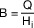

(1) Ist die zentrale Anlage zur Versorgung mit Wärme mit der zentralen Warmwasserversorgungsanlage verbunden, so sind die einheitlich entstandenen Kosten des Betriebs aufzuteilen. Die Anteile an den einheitlich entstandenen Kosten sind bei Anlagen mit Heizkesseln nach den Anteilen am Brennstoffverbrauch oder am Energieverbrauch, bei Wärmepumpen oder und bei eigenständiger gewerblicher Wärmelieferung nach den Anteilen am Wärmeverbrauch zu bestimmen. Kosten, die nicht einheitlich entstanden sind, sind dem Anteil an den einheitlich entstandenen Kosten hinzuzurechnen. Der Anteil der zentralen Anlage zur Versorgung mit Wärme ergibt sich aus dem gesamten Verbrauch nach Abzug des Verbrauchs der zentralen Warmwasserversorgungsanlage. Bei Anlagen, die nicht ausschließlich durch Heizkessel, durch Wärmepumpen oder durch eigenständige gewerbliche Wärmelieferung mit Wärme versorgt werden, können anerkannte Regeln der Technik zur Aufteilung der Kosten verwendet werden. Der Anteil der zentralen Warmwasserversorgungsanlage am Wärmeverbrauch ist nach Absatz 2, der Anteil am Brennstoffverbrauch nach Absatz 3 zu ermitteln.
(2) Die auf die zentrale Warmwasserversorgungsanlage entfallende Wärmemenge (Q) ist mit einem Wärmezähler zu messen. Kann die Wärmemenge nur mit einem unzumutbar hohen Aufwand gemessen werden, kann sie nach folgender Zahlenwertgleichung als Ergebnis in Kilowattstunden pro Jahr bestimmt werden:
Dabei sind zu Grunde zu legen:
- 1.
der Wert 2,5 für die Erzeugeraufwandszahl des Wärmeerzeugers, die mittlere spezifische Wärmekapazität des Wassers, die Wärmeverluste für Warmwasserspeicher, Verteilung einschließlich Zirkulation, Messdatenerhebungen zum Warmwasserverbrauch,
- 2.
das gemessene Volumen des verbrauchten Warmwassers (V) in Kubikmetern,
- 3.
die gemessene oder geschätzte mittlere Temperatur des Warmwassers (tw) in Grad Celsius und
- 4.
der Wert 10 für die übliche Kaltwassereintrittstemperatur in die Warmwasserversorgungsanlage in Grad Celsius.
Wenn in Ausnahmefällen weder die Wärmemenge noch das Volumen des verbrauchten Warmwassers gemessen werden können, kann die Wärmemenge, die auf die zentrale Warmwasserversorgungsanlage entfällt, nach folgender Zahlenwertgleichung als Ergebnis in Kilowattstunden pro Jahr bestimmt werden:
Dabei sind zu Grunde zu legen:
- 1.
der Wert 32 für den Nutzwärmebedarf für Warmwasser, die Erzeugeraufwandszahl des Wärmeerzeugers, Messdatenerhebungen zum Warmwasserverbrauch und
- 2.
die durch die zentrale Anlage mit Warmwasser versorgte Wohn- oder Nutzfläche (AWohn) in Quadratmeter.
Die nach den Zahlenwertgleichungen in Satz 2 oder 4 bestimmte Wärmemenge (Q) ist
- 1.
bei brennwertbezogener Abrechnung von Erdgas mit 1,11 zu multiplizieren,
- 2.
bei eigenständiger gewerblicher Wärmelieferung durch 1,15 zu dividieren und
- 3.
bei dem Betrieb einer monovalenten Wärmepumpe mit 0,30 zu multiplizieren.
(3) Bei Anlagen mit Heizkesseln ist der Brennstoffverbrauch der zentralen Warmwasserversorgungsanlage (B) in Litern, Kubikmetern oder Kilogramm nach folgender Gleichung zu bestimmen:
.
Dabei sind zu Grunde zu legen
- 1.
die auf die zentrale Warmwasserversorgungsanlage entfallende Wärmemenge (Q) nach Absatz 2 in kWh;
- 2.
der Heizwert des verbrauchten Brennstoffes (Hi) in Kilowattstunden je Liter, Kubikmeter oder Kilogramm.
Als Heizwerte nach Satz 2 Nummer 2 sind die in den Abrechnungsunterlagen des Energieversorgungsunternehmens oder Brennstofflieferanten angegebenen Heizwerte zu verwenden. Wenn diese vom Energieversorgungsunternehmen oder Brennstofflieferanten nicht angegeben werden, können hilfsweise folgende Werte verwendet werden:
| | Heiz-
wert Hi | Einheit |
|---|
Leichtes Heizöl
extra leichtflüssig | 10 | Kilowattstunden
je Liter |
| Schweres Heizöl | 10,9 | Kilowattstunden
je Liter |
| Erdgas H | 10 | Kilowattstunden
je Kubikmeter |
| Erdgas L | 9 | Kilowattstunden
je Kubikmeter |
| Flüssiggas | 13 | Kilowattstunden
je Kilogramm |
| Koks | 8 | Kilowattstunden
je Kilogramm |
| Braunkohle | 5,5 | Kilowattstunden
je Kilogramm |
| Steinkohle | 8 | Kilowattstunden
je Kilogramm |
Brennholz
(lufttrocken) | 4,1 | Kilowattstunden
je Kilogramm |
| Holzpellets | 5 | Kilowattstunden
je Kilogramm |
Holzhackschnitzel
(lufttrocken) | 4 | Kilowattstunden
je Kilogramm |
Soweit die Abrechnung über Kilowattstunden-Werte erfolgt, ist eine Umrechnung in Brennstoffverbrauch nicht erforderlich. Als H
i-Werte können verwendet werden für
| Leichtes Heizöl EL | 10 | kWh/l |
| Schweres Heizöl | 10,9 | kWh/l |
| Erdgas H | 10 | kWh/m3 |
| Erdgas L | 9 | kWh/m3 |
| Flüssiggas | 13 | kWh/kg |
| Koks | 8 | kWh/kg |
| Braunkohle | 5,5 | kWh/kg |
| Steinkohle | 8 | kWh/kg |
| Holz (lufttrocken) | 4,1 | kWh/kg |
| Holzpellets | 5 | kWh/kg |
| Holzhackschnitzel | 650 | kWh/SRm. |
Enthalten die Abrechnungsunterlagen des Energieversorgungsunternehmens oder Brennstofflieferanten H
i-Werte, so sind diese zu verwenden. Soweit die Abrechnung über kWh-Werte erfolgt, ist eine Umrechnung in Brennstoffverbrauch nicht erforderlich.
(4) Der Anteil an den Kosten der Versorgung mit Wärme ist nach § 7 Absatz 1, der Anteil an den Kosten der Versorgung mit Warmwasser nach § 8 Absatz 1 zu verteilen, soweit diese Verordnung nichts anderes bestimmt oder zulässt.